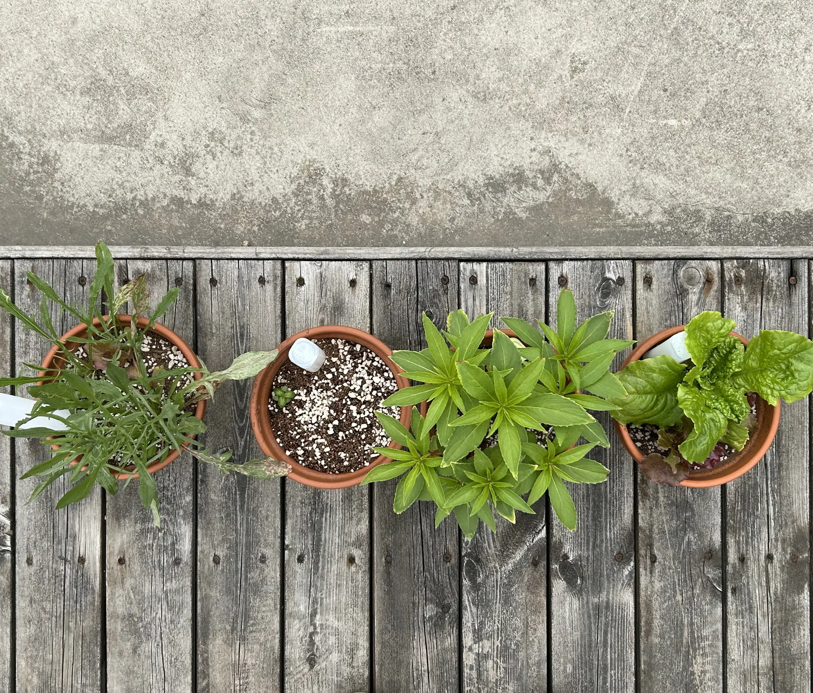

Newton Academy Smart Gardening Club
Student-run innovation on the 3rd floor terrace - Where technology meets nature

80+
Active Members
6
Plant Varieties
1.5
Years Active
#1
Most Funded Club
Explore Our Garden

Our Plants
고수, 상추, 방울토마토, 고추, 완두콩, 바질 - Growing with sensors
View All Plants
Smart Technology
Moisture sensors, automated watering, and self-adjusting systems
Explore Tech
2024-2025 IoT Project
20-week greenhouse automation case study with Arduino R4
View Full Report
Innovation Projects
Self-adjusting aggregation system and patent research
View Projects